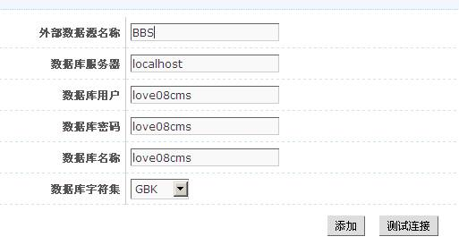
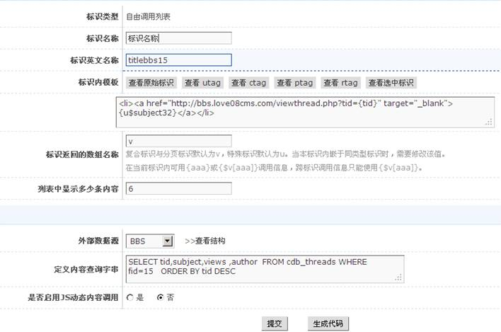

自由调用列表主要是用于站内其它标识难以实现的数据调用和站外数据应用于本站的标识。
第一步：站外数据库连接：
后台-->模板风格-->模板相关-->外部数据源-->添加外部数据源
如下图：

说明： 外部数据源名称：可已自定义，随便取名自已易记即可 数据库服务器：本机的话一般用localhost，与主程序不在同一台服务器上即用IP地址 以上图1填好后点击[测试连接]，如正确无误则会提示"外部数据源连接正确"
第二步：数据调用
模板风格-->复合标识-->自由调用列表-->添加
如下图：

说明: 标识模板：其内的连接地址用组合式地址 外部数据源：选取在第一步新建的〖外部数据源名称〗 定义内容查询字串：查询SQL语句